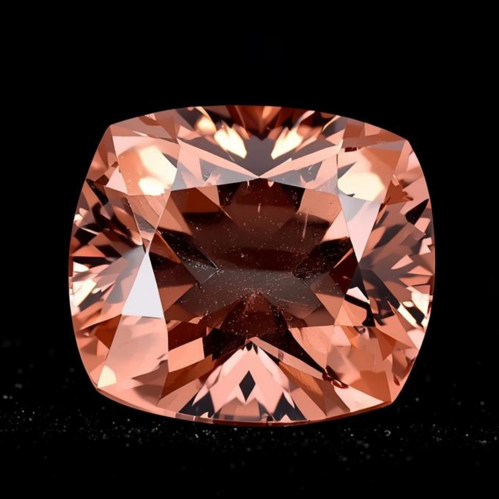
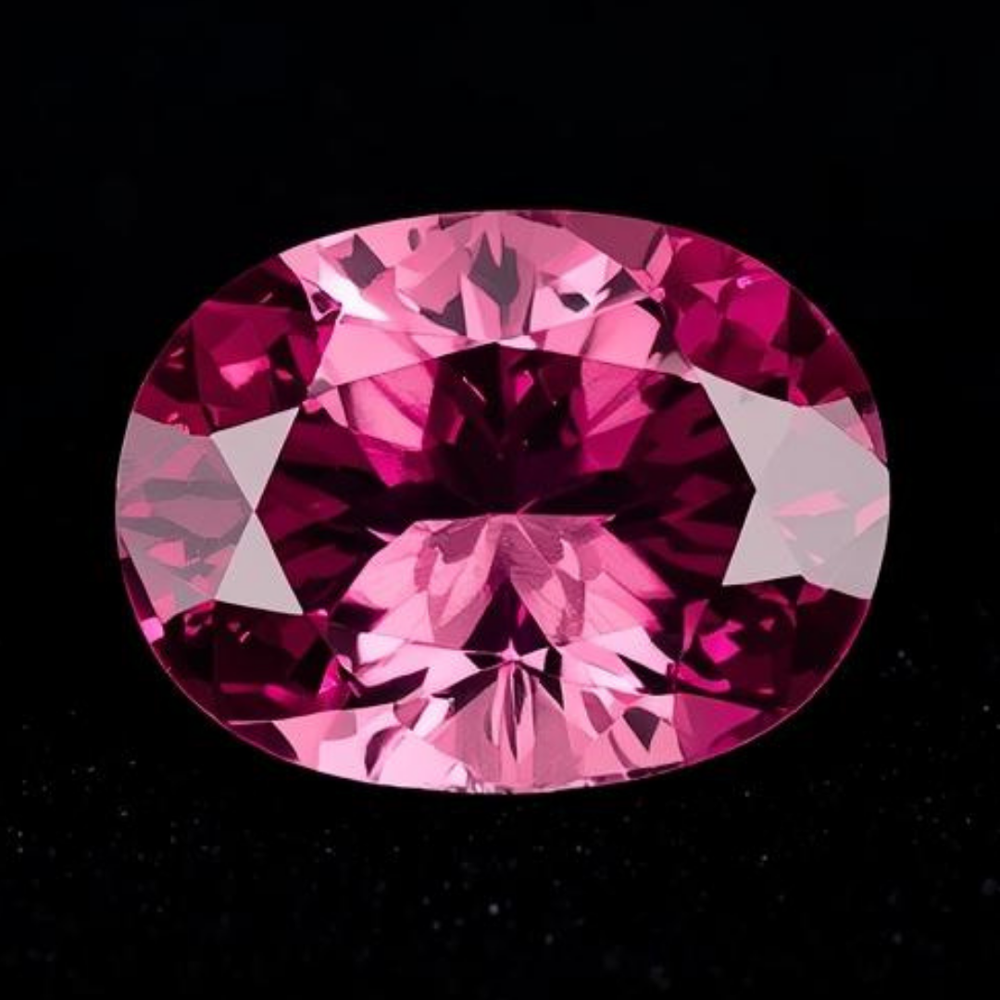
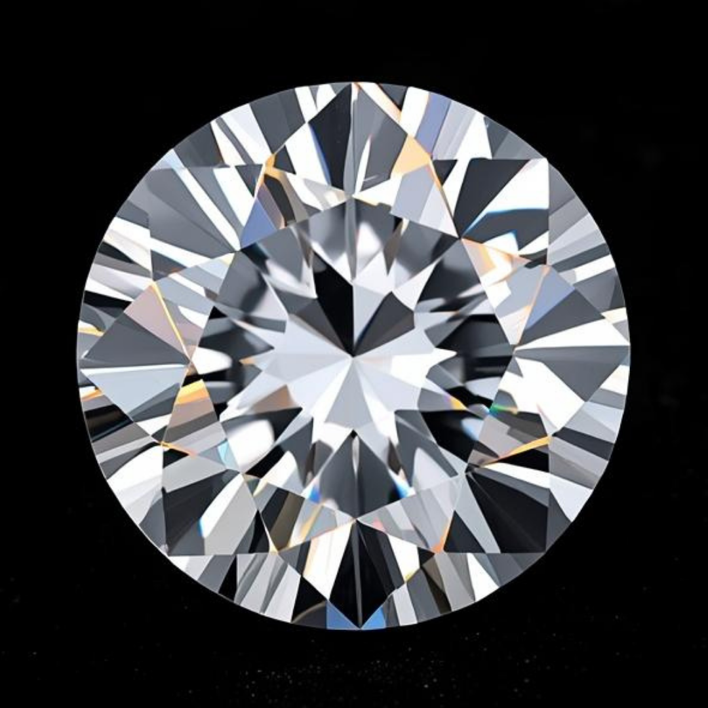
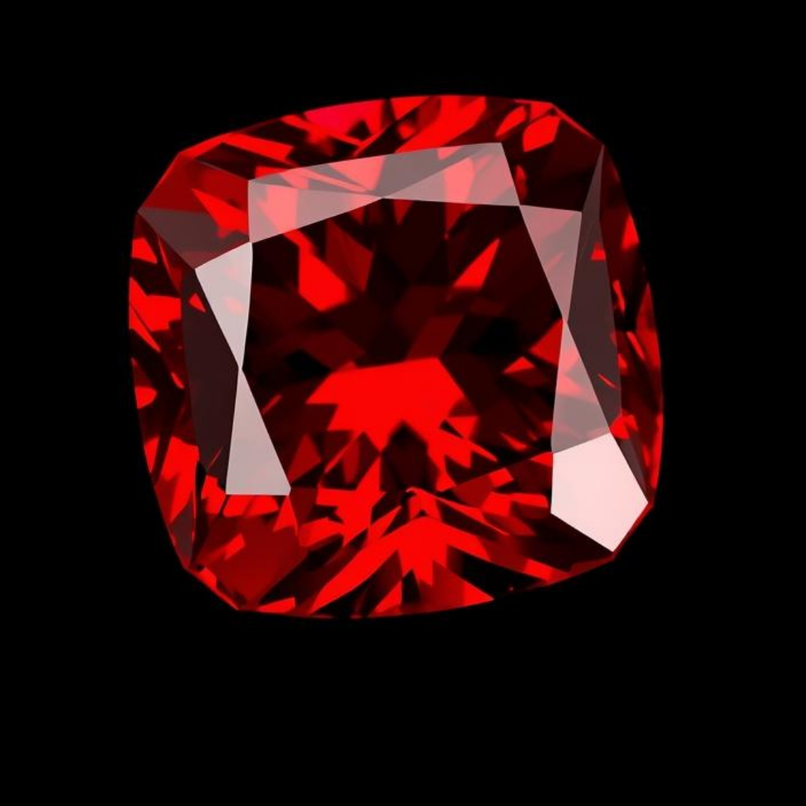
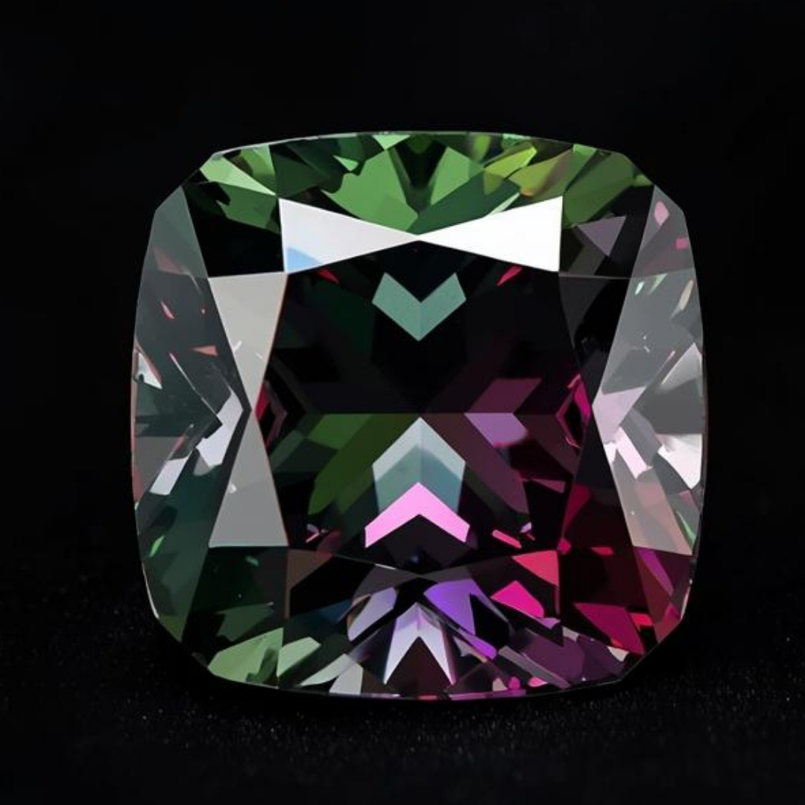
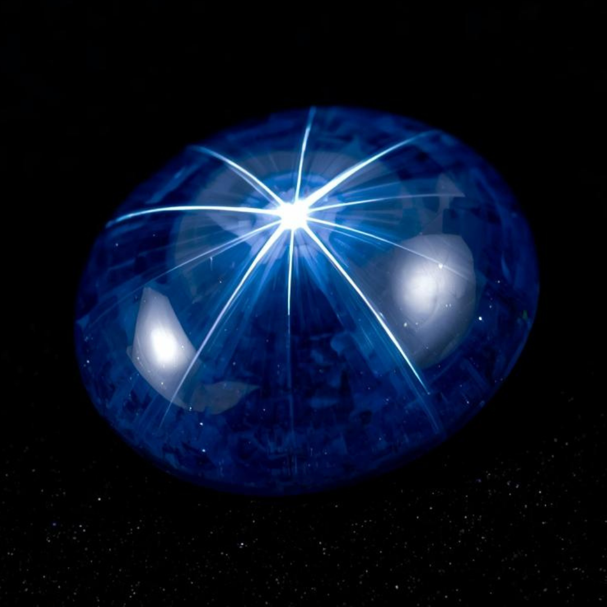
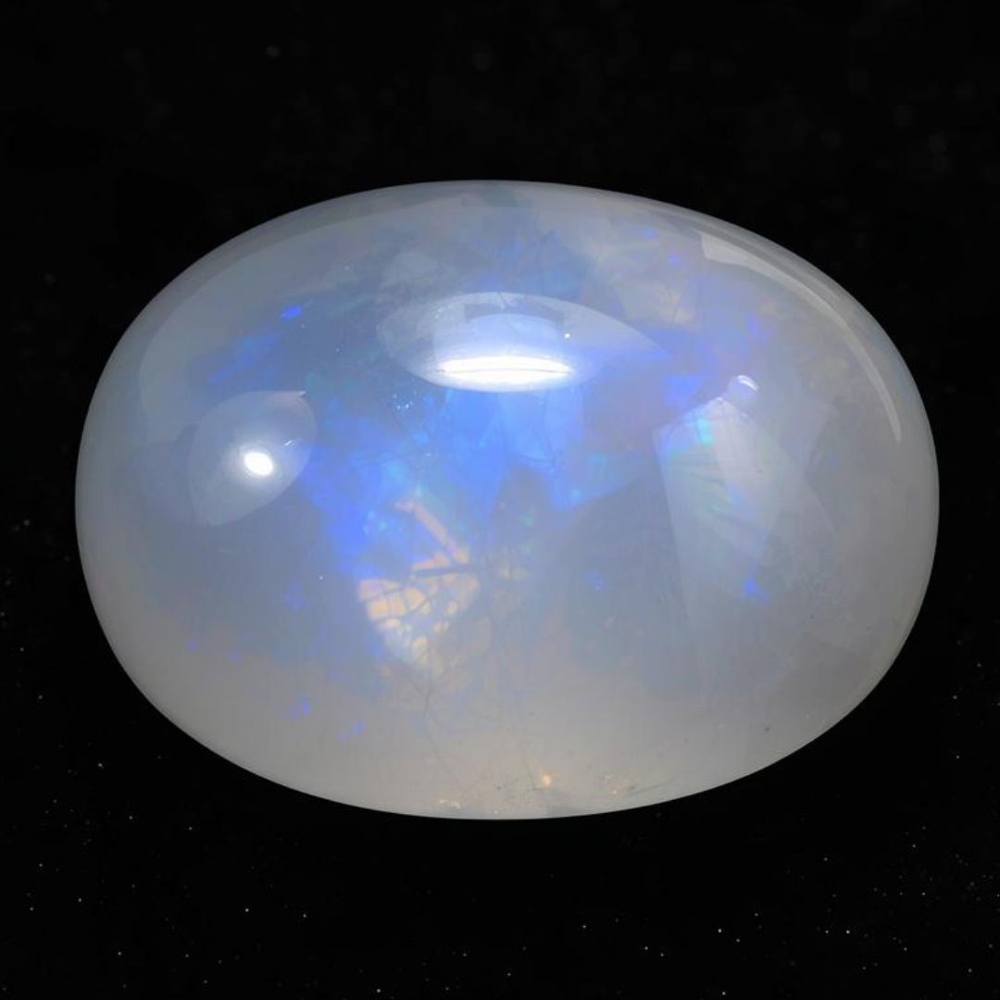
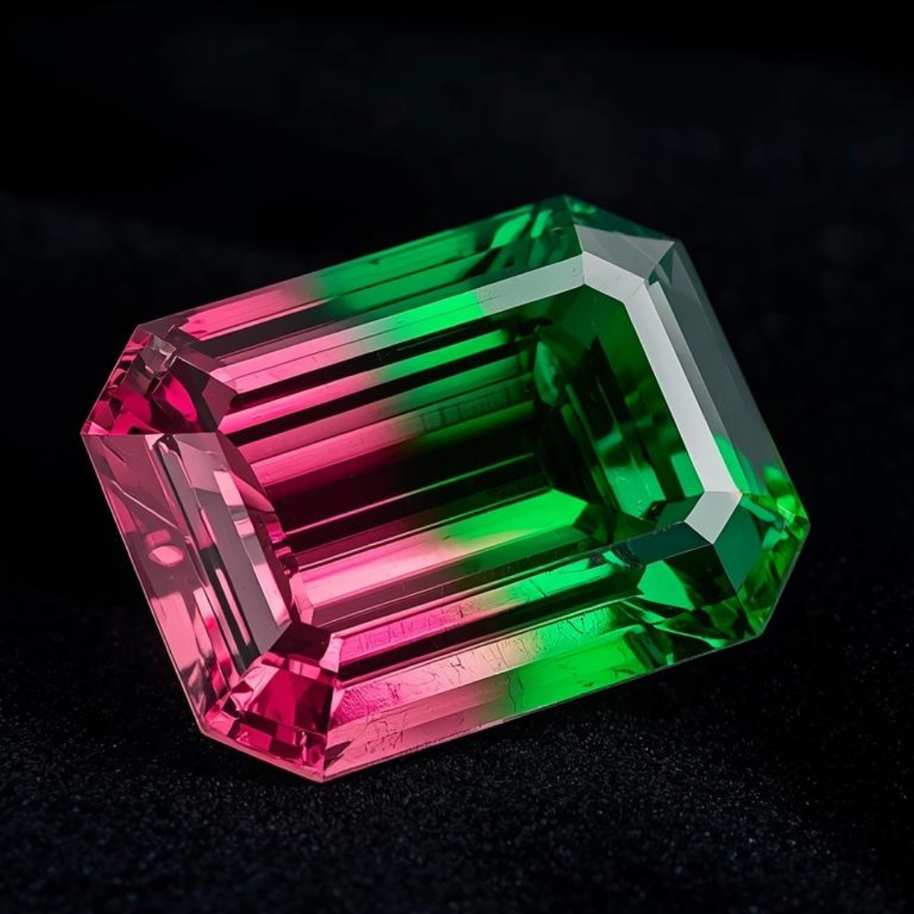

中國與台灣最受歡迎的寶石

藍寶石
斯里蘭卡 · 皇家藍至矢車菊藍；卓越光彩

帕帕拉恰藍寶石
斯里蘭卡 · 蓮花晚霞色調；極為珍貴

粉紅藍寶石
斯里蘭卡 · 鮮豔糖果粉至玫瑰粉

白色藍寶石
斯里蘭卡 · 明亮如鑽；璀璨閃爍

紅寶石
泰國 · 鮮紅至鴿血紅

黃色藍寶石
斯里蘭卡 · 金絲雀黃至金色調

貓眼金綠寶石
斯里蘭卡 · 銳利貓眼效應；蜜乳光澤

尖晶石
斯里蘭卡 · 熱粉紅、鈷藍；活潑閃耀

變石
斯里蘭卡 · 明顯變色效應；稀有珍品

星光藍寶石
斯里蘭卡 · 六射星光效應；絲絨光澤

鋯石
斯里蘭卡 · 高色散；藍色與香檳色

月光石
斯里蘭卡 · 藍色暈彩；柔和光輝

肉桂石
斯里蘭卡 · 肉桂橙色；亞洲尊崇之石

碧璽
斯里蘭卡 · 繽紛色彩；多樣切割
認證與保障
提供獨立實驗室報告（GIA、GRS、SSEF、AIGS）。完整處理披露與道德採購保證。